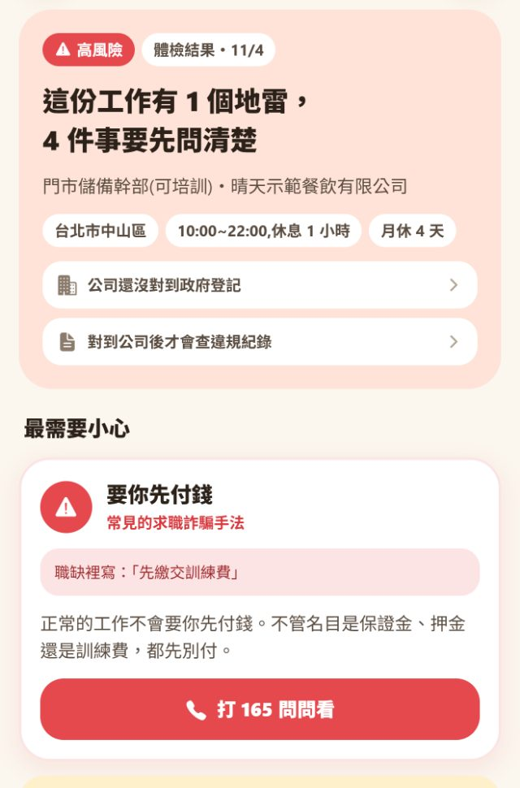
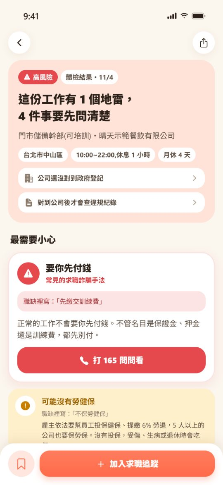
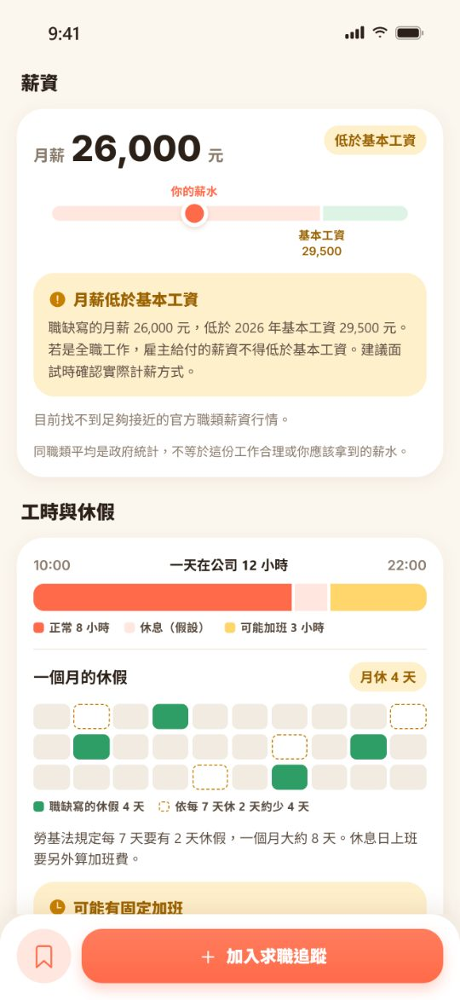
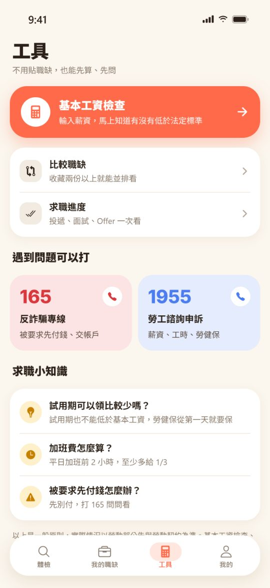

貼上職缺文字、網址或截圖，30 秒找出藏在裡面的地雷，面試前知道該問什麼。

職缺體檢由民間獨立開發，不隸屬、不代表勞動部、經濟部、內政部或任何政府機關，亦非政府官方 App。分析與風險提醒不是政府認定、法律判斷或求職安全保證。
不用註冊，打開就能用；每月免費完整體檢 5 份。
以下都是 App 實際畫面。



詐騙警訊、違規紀錄和最低工資提醒，不管有沒有訂閱都完整顯示。
不用註冊，訪客身分就能用
或 NT$590／年，功能相同
每月 1 日重新計算體檢額度；同一份職缺當月重新檢查不重複計次。Pro 目前在 iPhone 版訂閱，透過 Apple 帳號付款並自動續訂，實際價格以購買畫面為準。
報告引用的政府資訊都附原始來源。公開資料可能有更新時間差，請以原始機關公告為準；查無紀錄不代表沒有違規。